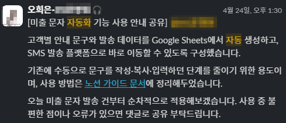

03 / AUTOMATION · OPERATIONS · 1,928건
대량 예외 1,928건을 우선순위로 나누고 반복 등록을 자동화한 뒤 필요한 인력까지 다시 계산했습니다.
Problem
외부 물류 운영사 전환 직후 재배송 1,151건과 취소 777건이 동시에 발생했고, 반복 입력까지 겹쳐 처리 지연 위험이 컸습니다.
Action
고객 약속·재고·후속 기한을 기준으로 재배송을 먼저 처리하고, 관리자 화면의 정형 입력은 Chrome Extension으로 자동화했습니다. 귀책·금액·최종 처리처럼 확인이 필요한 값은 사람이 검수하도록 남겼습니다.
Result
총 1,928건을 유형과 처리 시점으로 나눠 운영했고 반복 등록 동선을 7단계에서 1단계로 줄였습니다. 자동화 적용 후 필요한 지원 인력도 3명에서 2명으로 다시 산정했습니다.
Learning
자동화는 입력을 대신하는 데서 끝나는 게 아니라, 사람이 책임져야 할 판단 구간을 분명하게 남길 때 안정적으로 작동했습니다.
1,928건 · 반복 등록 7→1단계 · 지원 인력 3→2명 재산정

